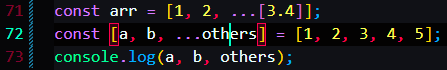

On the left side of the = means REST
On the right side of the = means SPREAD
Spread Operator basically turns stuff into seperate things
Whereas Rest Operator just conbine things into an array.
It's called rest because it will but the rest of the things into destructuring assignment


The rest element must be the last element, means that there can be only one Rest
Object way of doing Rest Operator


 \
\


The benefit is that you can pass in multiple arguments.